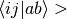

CACHELEVEL¶
Cacheing level for libdpd governing the storage of amplitudes, integrals, and intermediates in the CC procedure. A value of 0 retains no quantities in cache, while a level of 6 attempts to store all quantities in cache. For particularly large calculations, a value of 0 may help with certain types of memory problems. The default is 2, which means that all four-index quantites with up to two virtual-orbital indices (e.g.,  integrals) may be held in the cache.
- Type: integer
- Default: 2